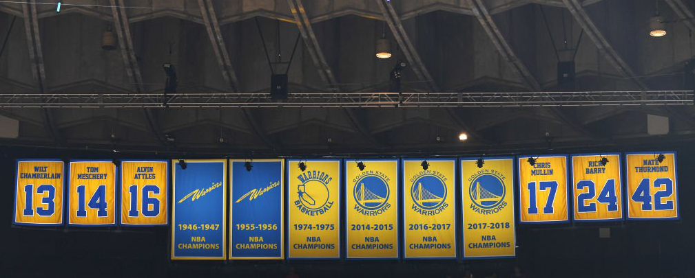

In sports a ‘dynasty’ is a team or individual that dominates their sport for some extended period of time, usually in the form of winning multiple consecutive championships and a lasting legacy. In the NBA, Michael Jordan’s Chicago Bulls and Kobe Bryant and Shaq’s Los Angeles Lakers are two of the most iconic dynasties to have ever come about. Today the Golden State Warriors are easily regarded as the latest NBA dynasty, with them having won four championships within the last decade. Though much of their success is attributed to the collection and retention of star talent, it’s very difficult to ignore the overall team’s effectiveness on the court. Thus it is not an individual Michael Jordan nor a Phil Jackson nor a Scottie Pippen that wins championships, but rather the combination of them and everyone else on the team and organization that succeeds.
I wanted to build something I considered impressive by the end of my software engineering class, and I wanted to use that project to help me display my level of knowledge and skill in coding and research to future employers. Besides the professional portfolio hosting all of these essays and project summaries, this project was to be the most valuable tangible benefit of taking this class. But of course, this was not an individual project. This project would ultimately be built with the help of three other students in my class, and while I did learn a lot during the building phase of the project, I think my main two takeaways from the experience were 1) Being able to research APIs to use in projects and 2) Learning about what not to do when leading a group project.
The final project initially began as a submission for the Hawaii Annual Coding Challenge (HACC). HACC registration did not require a team, but realistically as someone with no prior experience or knowledge in full stack development participating with a team made the most sense. Quickly, I managed to team up with three others in my class. And when it came time to submit our application we had to choose a team leader to submit everything. Selecting me as leader came (unsurprisingly) quick since everyone else preferred not to be in that position. It was after this point in the project that quickly came to understand two (major) things in terms of project team management.
And so in hindsight, I believe that success could have been improved significantly if communication about expectations and goals with the team had been expressed at the start. It’s not enough to simply establish a means of communication. If team members have other commitments they value over the project, then they need to be addressed early on and plans need to take them into account. This easily extends to any type of project from software engineering to intramural sports or even managing a restaurant business. Establishing team expectations and maintaining a consistent communication with the team will increase the odds of the team’s success.
The absence of project members will not change a due date; deadlines must still be met and strategies may need to adjust. Coding standards and design patterns provide teams with a way of maintaining readable and easy to manage code. While design patterns were not explicitly taught in class, it was passively taught through assignments using the same templates. The choice to build the final project on Meteor was a simple one - It was a platform everyone in the team was familiar with, and therefore reduced the amount of technology the team would need to learn about during development of the project. And so if a member committed a large addition of code to the project, one should have an easier time recognizing what the new code achieved as a result of its location in the project skeleton and its accompanying comments. And much like maintaining consistent communication, maintaining consistent and precise rules prove very effective in a team’s success.
Let’s return to basketball for a moment to discuss how design patterns and coding standards play a role in a team’s success. Teams always perform offensive and defensive schemes to respectively score points and prevent the other team from scoring. Many of these strategies have existed for decades, and are typically modified specifically to work with the players currently on the court floor. At a deeper level, each player pays attention to their teammates’ actions, using previous experiences to infer what their next move might be depending on a number of factors. If the direction I’m moving is unclear, the team strategies function like software design patterns and all the subtle, but important movements observed by teammates function like coding standards. The general idea is to employ proven strategies and ensure that each team member behaves consistently. And yet again we can apply this to other domains like managing a restaurant or even raising a child.
The Golden State Warriors didn’t become a dynasty solely because they employed the strategies of agile team management, coding standards, or design patterns. There was also a large factor of luck involved in being able to the talent that they possessed. Stephen Curry is widely known as the greatest 3-point shooter in NBA history, and his teammate Klay Thompson is also considered to be an all-time great 3-point shooter. The team also managed to pick up another all-time great scorer in Kevin Durant, who nearly helped the team win three consecutive championships. In addition to possessing great talent, their greatest rival teams fell victim to ill-timed injuries which, in some cases, may have been key to the team’s victory. But the Golden State Warriors weren’t and aren’t the only team to possess multiple all-time great players and talent.
Another team, the Brooklyn Nets, was expected to have become the next great dynasty for having collected three of the best scoring players in the last decade. Despite the talent, however, the team never won a championship and eventually the team dissolved. Much of the reason behind the team’s failure was attributed to its star players failing to work together when it really mattered. Whether it was due to injury, personal beliefs, or team management disputes, the three star players played together for a combined total of 16 out of 82 games. The idea was to win games on talent alone, but because of the lack of games together, the team lacked the chemistry needed to overcome teams with lower expectations to win.
Great teamwork is not the be-all or end-all of success in a team project, but it should never be ignored or forgotten. It’s a basic idea that has paid off time and time again, and it’s certainly not unique to software engineering. I will continue to improve my knowledge of computer science and expand my programming toolkit, but I will never forget the importance of establishing team expectations and working in harmony with my teammates. I may never be a part of a super team like the Golden State Warriors, but I can still try to ensure that my team is successful. I certainly don’t want to repeat staying up several hours again, that’s for sure!